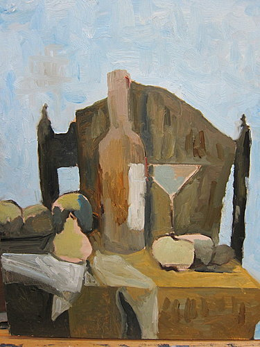
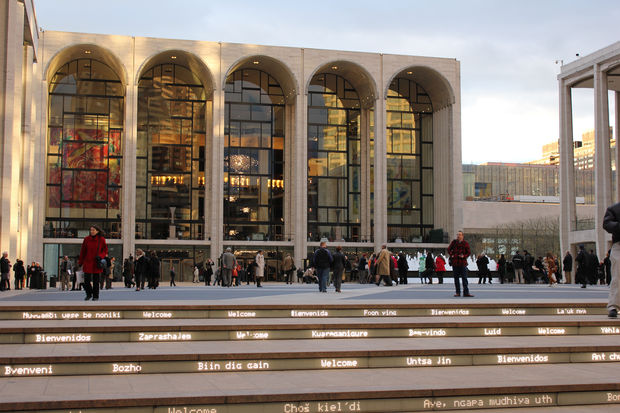

On this small webpage, you will find multiple images presenting Angelika, a student in CISC2350, LL914.
Navigate this website! Next time the scrolling will be improved.
I'm from Taiwan, which looks like a sweet potato. I am low-key wanting to become a veterinarian, but I have not yet find a timing to talk to my parents about it. Finding this at the beginning of senior year... I would like to get started after completing my current degree.

Having my dad's painting as an example: I've been trying to get muted colors on my painting the past couple of months. Got introduced to Zelda before summer. The production of the game is just beautiful. p.s. fought the boss successfully (over prepared) yesterday, 9/8/2018.

Met Opera is super convenient for me since I live around school. I truly appreciate the fact that high quality operas is affordable.